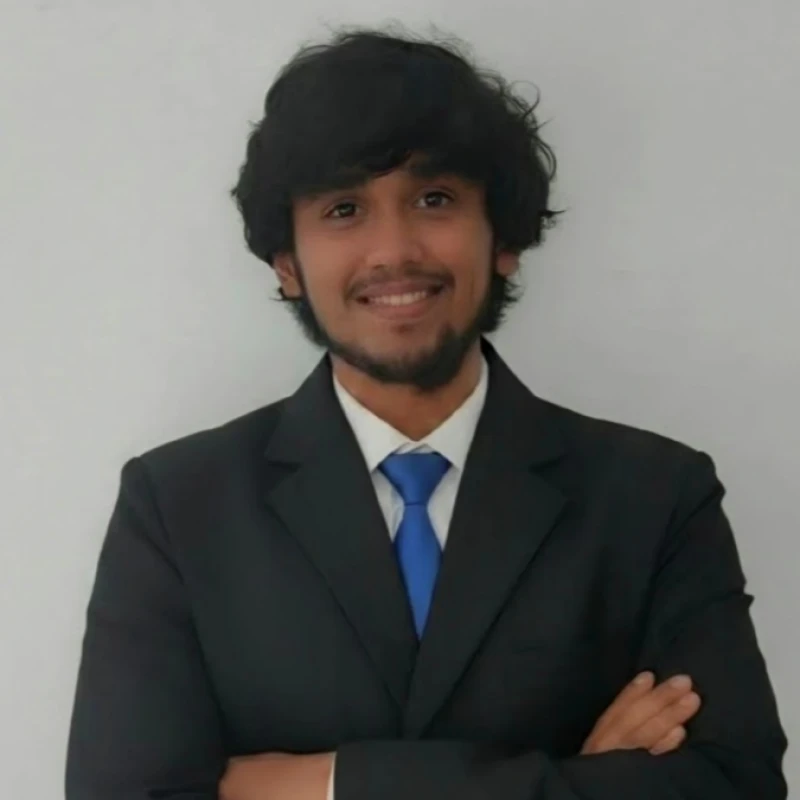

When should a battery digital twin ask the cloud for help?
My work examines whether a local BMS can remain the authority for safety while selectively requesting higher-fidelity calculations.
RESEARCH PORTFOLIO / 2026
Jyotirmoy Chakraborty
I am a research engineer working at the intersection of lithium-ion battery management, state estimation, physics-informed machine learning, and real-time systems. I build models and tools that connect sound physical reasoning with practical implementation.

My work examines whether a local BMS can remain the authority for safety while selectively requesting higher-fidelity calculations.
Compared with continuous communication in the project report’s tested PIL configuration. This is not a physical CHIL result or a general guarantee.
The planned physical CHIL experiment will assess real-time execution, fault response and end-to-end latency.
Evidence: October 2026 scientific project report, particularly Sections 6, 14, 15 and 23. See result conditions and limits →
I study how local battery controllers can use cloud intelligence selectively while maintaining control and safety when the connection fails.
A local estimator runs continuously, while the cloud is invited in when residuals, uncertainty or operating risk warrant additional help. Cloud feedback is validated before it influences the local estimate.
Condition-aware cloud assistance without giving up local safety.
Explore case studyObservability for battery-health models after deployment.
Explore case studyPractical, privacy-conscious health insights from laptop telemetry.
Explore case studyComparing neural-network approaches to state-of-charge prediction.
Explore case studyBattery state estimation, event-triggered communication, and cloud correction checks built around a local safety controller.
Closed-loop hardware testing, communication-failure experiments and systematic timing measurements.
Formal event-trigger bounds, model uncertainty, ageing prognosis and physics-informed approaches across operating conditions.
My interests grew from physical engineering systems to software, sensing and AI. Today, that combination shapes how I approach battery modelling and real-time research.
More about my pathEnergy Sciences and Engineering · IIT Guwahati
NEXUS P2P and computer-vision experiments
Tezpur University · computer-vision capstone
I use tools across modelling, estimation, machine learning and embedded systems — and prefer to show how each was used rather than assign arbitrary skill percentages.
Experience & skillsPhysical controller validation, event-trigger analysis and monitoring reliable battery ML systems.
Read current research updatesOPAL-RT plant + TI C2000 embedded controller. This step is planned; measured closed-loop results are not yet claimed.
Open to discussions with researchers, potential PhD supervisors and engineering collaborators.
Direct routes to methods, supporting evidence and research fit — without navigating a general résumé.
Selectable-text public CV; sensitive identifiers redacted.
Current contributions, boundaries, and research questions.
Methods, source figures, comparator and limitations.
Topic-based links for different laboratory interests.
Technical report clearly separated from peer-reviewed publications.
Institutional email and professional profiles.
Some experimental details and the complete project report are not published on this website pending sharing approval.
An automated guide using approved portfolio content — not Jyotirmoy.
Runs entirely in your browser. No messages are stored or sent to an AI provider.